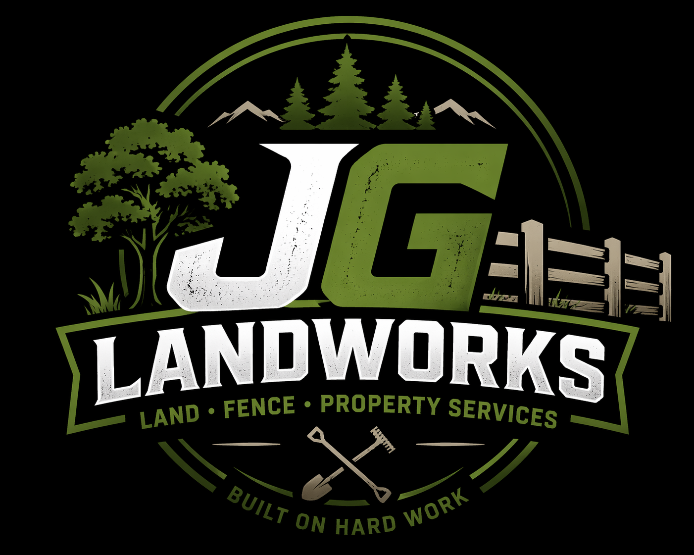

Landscaping
Yard cleanups, trimming, mulch, planting, brush removal, and general curb appeal work.
Landscaping • Fence Work • Property Services
JG Landworks helps with landscaping, fence jobs, yard cleanup, hauling, and the kind of hands-on property work that needs dependable people.

What we do
Yard cleanups, trimming, mulch, planting, brush removal, and general curb appeal work.
Fence repairs, tear-outs, installs, post replacement, and other small to mid-size fence jobs.
Hauling, debris removal, seasonal cleanup, overgrowth clearing, and tough outdoor cleanup jobs.
Extra help for the work homeowners do not want to tackle alone. Fast, practical, and dependable.
About JG Landworks
JG Landworks is a hands-on local company focused on helping homeowners keep their property clean, functional, and looking good. We show up, work hard, and treat every job like it matters.
Whether it is a landscaping project, a fence repair, or a random labor job that just needs to get done, we are here to help.
How it works
Call, text, or email with the job details and a few photos if you have them.
We will talk through the work, timing, and pricing before anything starts.
We show up ready to work and leave your place looking better than we found it.
Get in touch
Call or email JG Landworks for a free quote. We can also add your city, hours, and service area once you are ready to launch.
Phone: (530) 305-6309
Email: jakegraham192@gmail.com
Service area: San Luis Obispo + surrounding areas
Hours: Call for availability.
Request a Quote